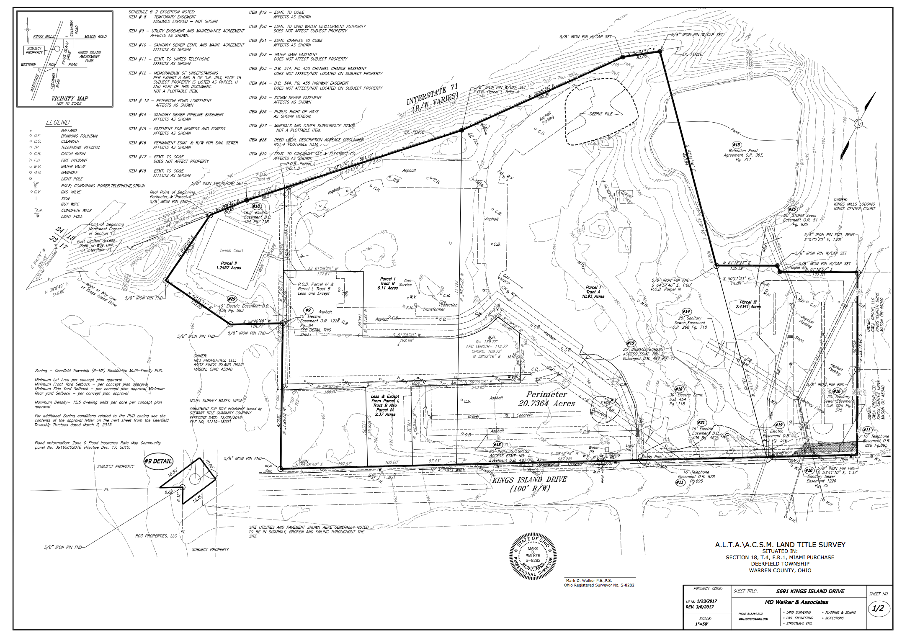
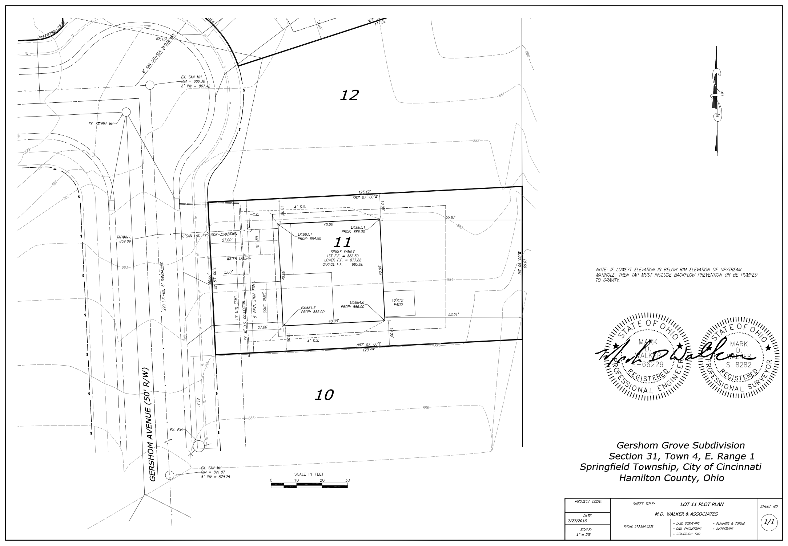
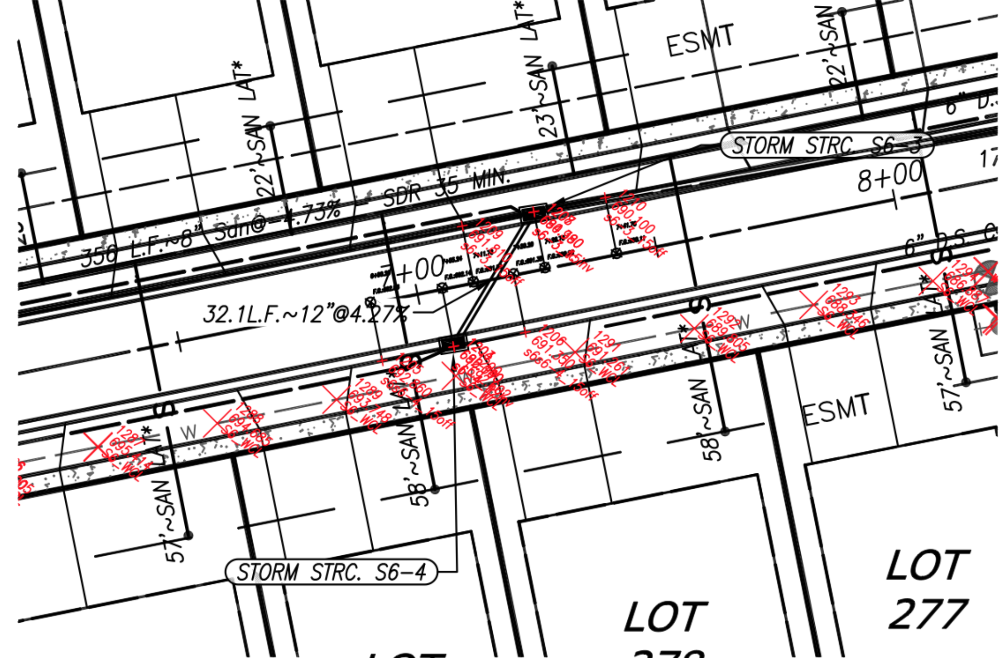

Walker & Associates

Experience
When you need accuracy, we have it. Using the latest GPS technologies along with robotic total stations, allows us to perform a multitude of surveying tasks to meet our clients needs.
Below are a few sample projects and project types that have been recently completed by our firm.
For additonal information and to talk about your specific needs, give us a call or drop us an email.

ALTA/NSPE Land Title Surveys
Anyone buying commercial property is aware that minimizing risk is essential. Performace of an ALTA/NSPE Land Title Survey and review of any schedule B title exceptions by a competent professional can go a long way towards that end.
Our professionals at MDWA have been completing ALTA/NPSE Land Title surveys and survey updates for over 20 years. Our professionals have the know how to provide accurate surveys meeting the ALTA/NSPE requirements as well as provide the proper guidance when issues arise.

Plot Plans
Our team has completed hundreds of plot plans for single family home construction over the last several years.
Warren County, Butler County, Clermont County, Hamilton County, The City of Cincinnati, The City of Madeira and many others are all counted among the diverse areas where we have experience working with the local building officials.

Property Surveys
Whether you are looking at a small single family lot, are looking to subdivide a large farm parcel or anything in between, our firm has the capability, experience and tehcnical know how to provide an accurate survey and complete documentation in a timely and cost effiencent manner.
We have completed surveys, splits, consolidations, and easement plats in many varying settings and circumstances.

Construction Staking
Foundations, curb, fences and utilities are a few of the items commonly staked by our surveyors.
We understand the fast paced and unpredictable environment of construction projects. That's why we not only strive to provide accurate staking, but also to be reliable and available when when the schedule dictates.